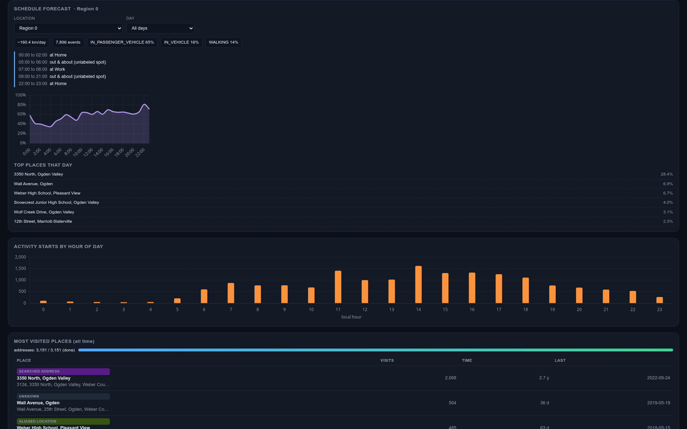
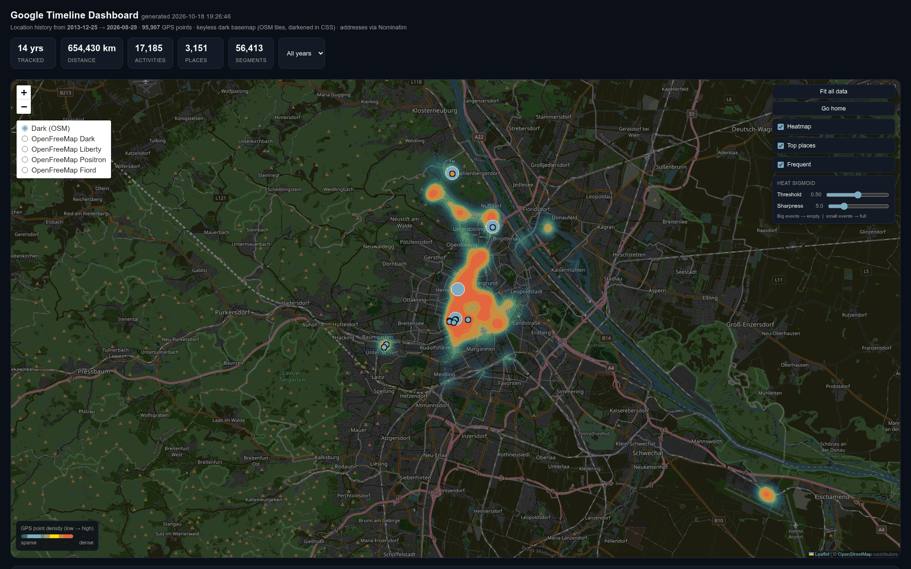
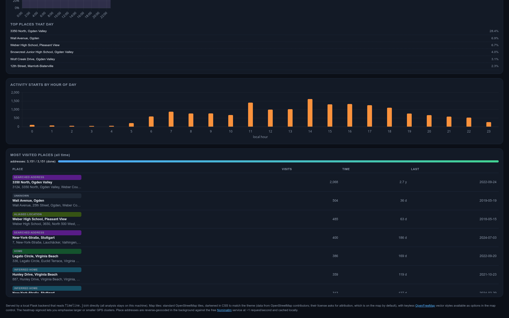

Google Timeline Visualizer
The export
Google Location History is a JSON file that is, on paper, a log of every position fix the phone reports. Mine is fourteen years of that, 2013 to 2026: a little over two hundred thousand fixes spread across fifty-six thousand segments, plus a raw signal stream that carries motion states and travel modes on top of the positions. I was not going to read that file by hand.
So the app does two jobs. First it collapses the raw points into a heatmap grid at the resolution you can actually look at, grouped by year, and clusters them into places, by how often I came back. The second job is the reason I built it: a forecast. Given my own history, where am I most likely to be, by hour of day and by day of week?
The forecast, first
The dashboard opens on it, on purpose. Pick a place, or a whole region, and an ordinary weekday, and it tells you the shape of a normal day there: what time I leave, what time I come back, what I do in between, and the chance I am anywhere at any given hour. Underneath it is a lightweight Bayesian scheduling model. It does not pretend to be a neural net. It bins my history by hour and by day of week, smooths it a bit so one weird Tuesday does not dominate, and reads a probability back off the result. The narrative it prints, “00:00 to 02:00 at Home, thirty percent chance”, is generated from those bins, so the story and the chart cannot disagree.

What the map shows
The other two views are the heatmap and the places. The map is the dashboard, full width, and the KPIs and filters sit around it:
- A per year heatmap of every position on a dark basemap, with an intensity slider and a filter that drops the big cities so the places I rarely visit stop disappearing under them.
- Top places for that year, how far apart, how many visits, so the ten years of me read as movement, not just a smear.
- Activity starts by hour of day, the same bins the forecast is built from, drawn as a bar chart so you can see the rhythm of the whole decade at a glance.
- A most visited places table with category, visits, time spent, and last seen, one row per place, clickable to zoom the map in.


What the data costs to work with
The file is big enough that the app has to be honest about what it
is doing. It loads once, builds the heat grid and the place
clusters in memory, and serves them from cache, so a reload does
not re-parse fourteen years. The geocoder needs that same honesty, on disk. Reverse geocoding three thousand
place clusters against Nominatim without a key is slow, so every
resolved address goes into a local cache and the app only asks
about the places it has not seen before. That cache is the real coordinates of my own places, so it stays behind a
.gitignore, and the same goes for the export
itself.
The repo ships a self-contained run_sample.py instead:
it regenerates a synthetic ten-year timeline from a fixed seed,
the same schema, the same point density, no real locations, and
runs the real app against it. The code you read is the code that
runs. Point it at the real export and only the numbers change.
One dead end worth writing down
The dark basemap I wanted was, it turns out, not one you can have for free anymore. Every keyless dark raster is either gone or gated, so the fix that stuck is standard OpenStreetMap tiles under a CSS invert filter. It costs nothing, it renders everywhere, and the OpenFreeMap vector styles are still there if you want the cartographic look back.
Tech & approach
Python throughout, and most of it one file:
app.py is a Flask app that parses the export, dedupes
the heat cells on a four-decimal-degree grid, clusters places out of
it, and serves the dashboard plus a small API
(/api/heat, /api/places,
/api/forecast). The frontend is
index.html with static/app.js:
Leaflet for the map, Chart.js for the bars and the likelihood
curve, all off the vendor folder, no build step.
run_sample.py is the standalone seeded entry point.
What made it stick
The forecast is the point, not the map. The heatmap and the places table are why you trust it, because the model is my own history, not a generic prior. When it says that on a normal Tuesday afternoon I am most likely back at the same place, hour by hour, that is not a guess. That is the decade I let it record, smoothed just enough to read.